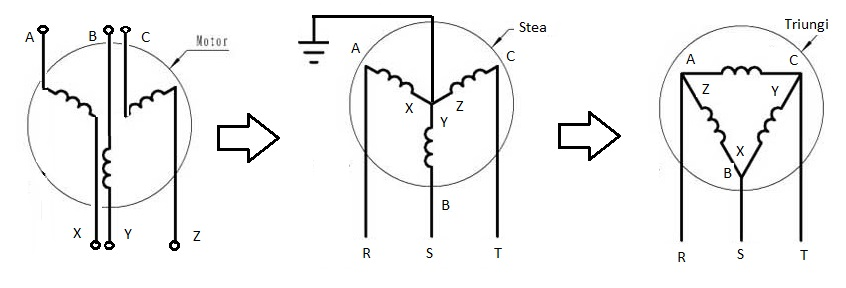
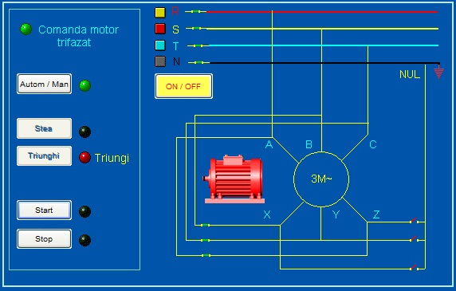
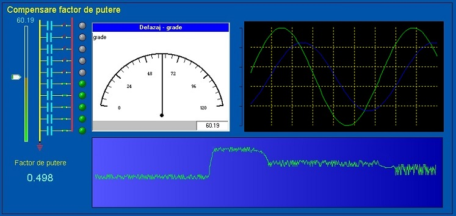

Studentii vor realiza 3 aplicatii si un proiect final utilizand mediul de dezvoltare Citect SCADA.
Pe baza aplicatiilor si a proiectului, se vor realiza 4 fisiere de tip pdf (3 lucrari+ proiectul final) in care se vor descrie aplicatiile,
respectiv proiectul final astfel:
-Se descrie modul de functionare al aplicatiei (proiectului).
-Se vor insera imaginile HMI ale aplicatiilor sau ale proiectului (se poate folosi aplicatia "snipping" pentru a capta o regiune de ecran sau PrintScreen si "Paint");
-Se va insera codul sursa al functiilor realizate in cadrul aplicatiilor (proiectului).
-Se va descrie modul de realizare al aplicatiilor (proiectului).
-Descrierea aplicatiilor (proiectului) se salveaza in fisiere de tip pdf .
-Se vor trimite fisierele in format pdf.
Atentie! Lucrarile trebuie sa fie originale. Studentii care prezinta aplicatii asemanatoare vor fi descalificati.
Fisierele "pdf" continand descrierea lucrarilor realizate, se vor trimite respectand urmatorul program:
-Lucrarea 1 pana la data de : 23.04. In cadrul acestei lucrari veti prezenta o aplicatie SCADA realizata de d-voastra.
Cerinte:
Sa contina cel putin 2 set simbol-uri create de d-voastra.
Sa contina cel putin 10 variabile locale.
Sa contina cel putin 2 variabile de tip Array.
Sa contina cel putin doua set symbol-uri de tip multistate
Sa contina cel putin un set symbol-uri de tip Array
Sa contina cel putin un set symbol-uri de tip Animated
-Lucrarea 2 pana la data de : 14.05.
In cadrul acestei lucrari veti prezenta o aplicatie SCADA pentru comanda pornirii unui motor trifazat in conexiunea strea->triunghi.

Cerinte:
Sa contina un comutator general de conectare la retea
Aplicatia trebuie sa permita doua moduri de functionare: Automat si Manual
Sa contina butoanele: Automat/Manual, STOP, Stea, Triunghi, Start
In regim manual sa permita pornirea in conexiune stea prin apasarea butonului Stea dupa care sa permita trecerea la conexiunea triunghi prin apasarea
butonului Triunghi.
Sa permita apasarea butonului Triunghi numai dupa apasarea butonului Stea.
In regim automat, sa se declanseze procedura de pornire in conexiune stea prin apasarea butonului Start, sa astepte 3 secunde in conexiunea stea, sa astepte 0.5 secunde
in conexiune stop dupa care sa treaca automat la conexiunea triunghi pana la apasarea butonului Stop.
Sa indice in permanenta modul de functionare in care se afla( Stop, Stea, Triunghi).
Sugestie!
Atentie! Lucrarea trebuie sa fie originala si pe cat posibil, sa nu semene cu imaginea de jos, imagine care nu este decat o sugestie!

-Lucrarea 3 pana la data de : 21.05.
In cadrul acestei lucrari veti prezenta o aplicatie SCADA pentru compensarea factorului de putere in retelele de curent alternativ.
Cerinte:
Sa contina un element grafic (un obiect) care sa simuleze defazajul dintre curent si tensiune in plaja 0-90 grade.
Sa contina un grup de 10 condensatoare care vor fi comutate automat in functie de defazajul intre curent si tensiune.
Functia pentru comanda comutarii condensatoarelor sa fie realizata utilizand instructiuni repetitive(FOR, WHILE, etc)
Sa afiseze formele de unda sinusoidale ale tensiunii si curentului defazate intre ele in functie de defazaj.
Sa afiseze valorile instantanee ale defazajului in grade si ale factorului de putere (cos fi).
Sa afiseze Trending-ul factorului de putere (cos fi).
Sugestie!
Atentie! Lucrarea trebuie sa fie originala si pe cat posibil, sa nu semene cu imaginea de jos, imagine care nu este decat o sugestie!

-Lucrarea 4 optional
In cadrul acestei lucrari veti prezenta la alegere una dintre cele doua aplicatii de mai jos:
Aplicatia A:
Aplicatie SCADA care contine un sistem de reglare automata (SRA) de tip PID
Aplicatia B:
Aplicatie SCADA pentru comanda si monitorizarea unei statii electrice care contine doua bare colectoare
cu sectionare longitudinala
Cerinte:
Sa contina o lista cu conditiile si regulile de functionare care urmeaza a fi implementate in aplicatia SCADA
Sa contina o pagina grafica(HMI) cu schema monofilara a statiei.
Sa implementeze conditiile de functionare stabilite in lista de la punctul 1
Sa permita diverse manevre manuale daca acestea sunt corecte.
Sa nu permita manevre manuale incorecte.
Sa permita trecerea automata in diverse configuratii.
Sa permita reconfigurarea automata in caz de avarii.
-Proiectul final pana la data de: 30.05.
In cadrul acestei lucrari veti prezenta o aplicatie SCADA la alegere, cu conditia sa fie mai complicata decat lucrarile anterioare.
Lucrarile in format pdf se vor trimite astfel:
- Se intra pe Activitate studenti
- Daca nu aveti cont:
- Se va face Inregistrare ( Alegeti sectia si completati restul campurilor).
- Atentie !! nu uitati adresa de mail si parola. Pe baza lor veti putea face Intrare pentru a trimite fisierele cu lucrari.
- Asteptati pana va validez conturile.
- Dupa minim 24 de ore va validez conturile si d-voastra puteti sa intrati in Activitate studenti.
- Cand ati terminat lucrarea, cu optiunea Trimit fisiere trimiteti fisierul "pdf".
- Atentie !!
dimensiunile fisierelor trebuie sa fie sub 1 MO
denumirea fisierului sa fie scurta, fara caractere speciale (spatiu ,;-+ etc)
completarea campul "Tilul lucrarii" este obligatorie !
- Verificati cu optiunea Vezi activitate daca s-au trimis fisierele.
- Dupa maxim o sapatamana lucrarea trimisa va fi evaluata si punctata intre 0-25.
- Cu optiunea Vezi activitate puteti afisa fisierele trimise, prezentele, observatiile referitoare la lucrarile trimise si punctele primite.